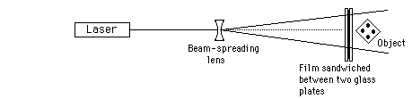

Direct Beam Reflection HologramGeneral considerations: The beamspread should be made slightly larger than the film. The gaussian distribution of the light puts most of the light in the central two-thirds of the beam. The object should be placed close to the film. The closer to the film, the brighter they will appear in the finished hologram. The beam intensity should be about the same from the two sides of the film, so best results are obtained with reflective objects.
|
Index | |||||||||
| HyperPhysics***** Physics 3901 ***** Holography | Go Back |